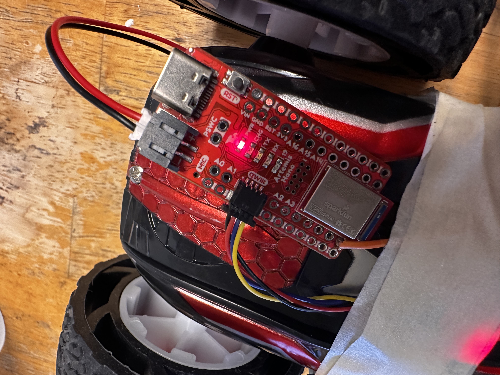

INTRODUCTION
The inertial measurement unit is a vital sensor to any practical robotics application. Through complex integrated accelerometer and gyroscope, it can give you the vital information needed to calculate the orientation of the robot. Through the tasks outlined in Lab 4, I will work towards using the IMU to my advantage and appplying it to the robot we're designing.
SETTING UP THE IMU

There was not much setup to the IMU. Simply connecting the QWIIC connect cables from the IMU to a multiport was sufficient to get the component in a workable state. Below you can see a quick video showing me running the example code.
Note: In this code, there is a specific constant, AD0_VAL. This constant can be used to change the last digit of the address for the IMU, allowing for easy integration of a second IMU without overlapping I2C addresses.
Now looking closely as I turn the IMU around, we can see a few things. For instance, while in a standard orientation, the acceleration in the z-direction is almost constantly read to be approximately 1000 mg. This is due to the force of gravity on the accelerometer. Whichever axis points vertically will have more of a gravitational component than the rest. We can also see that while I turn the IMU that the gyroscope values respond. The gyroscope reads the angular velocity of the system and while the accelerometer implements trigonometric relationships in order to find an approximate angle, the gyroscope must be integrated over a step time in order to derive the angle.
ACCELEROMETER

Using the below code and by rotating the IMU about the edge of the table, I was able to successfully determine the angle of each axis to the IMU and make the graph seen.


Evidently, the IMU can be incredibly noisy and have some issues when pitch or roll reaches the 90 degree position. This is likely due to the trigonometric relation used to describe the angle. When the angle reaches 90 degrees the atan2 function spits out a much larger number than it should do to the quadrant boundary. Regardless, the results are pretty accurate even though there is significant noise overlayed on it. Taking this resulting signal and sending it to my computer, it looked like this:

In order to attempt to cut out some noise, I did a fourier spectrum analysis on the signal to pick out unnaturally high frequencies. Here are the results:

As seen above, the signal is very strong at very low frequencies with a lot of smaller amplitude noise. This means that there isn't any one frequency of noise. This likely arises from some kind of internal low pass filter in the IMU itself. In fact, by looking into the IMUs datasheet, the following can be found:

The optional low pass filter seems to be integrated and the empirical evidence I gathered seems to confirm that.
GYROSCOPE
The gyroscope had to be implemented differently than the accelerometer. Because it measures angular velocity, I simply needed to multiply the reading by some time step that the control loop ran at, then I was getting decently accurate positional angles that didn't have any noise like the accelerometer did but instead drifted from the initial values. Below is a video example of the gyroscope's relationship to its angular position.
If we were to combine both the accelerometer and the gyroscope we'd get a complimentary filter that would cover the weaknesses of both sensors. Below is the code I used to get there and a video of the final result of the filter.

The alpha value in the equation to find the final angle is a constant chosen by me. It represents how "trusting" we are in the value we get from the accelerometer. I chose this number to be around 0.1. This is due to the noisy and unpredicatable nature of the accelerometer compared to the steadyness of the gyroscope. Finally, I was able to take out all the things slowing down the program and see how fast I was actually able to sample the IMU. This turned out to be around 22ms a sample as seen by the Serial monitor output below.

APPLICATION
SAMPLING
To apply this lab to the future of our bot, we're going to need to take these sensors to the wireless realm. In order to do that, we need to establish new commands in the ble_Arduino script used in previous labs. By reading the sensors into arrays we can manage the large data load needed to send over all the information that the IMU and the Time of Flight sensors collect. I thought it would be best to seperate each measurement into its own array. That way the information is much more organized and I can choose each component I want to send later. This means we need 9 arrays (time, ToF1, ToF2, accelerometer: x, y, z, and gyro: x, y, z). If we make all those numbers 4 byte floats, that means one packet of information takes up 36 bytes. If we continue taking samples at 22 ms like we were before (keeping in mind the artemis has approximately 384 kB of RAM) we should be able to store approximately 213 seconds of data before all 384 kB are full. Below is my evidence that I acomplished 5 seconds of data collection:


BATTERY
The kit we were given came with two types of batteries to use. a 650 mAh battery and an 850 mAh battery. Either one could be used to power the artemis or the motors. I made the decision to use the 850 mAh battery for the motors due to the heavy power consumption. With a bigger battery on the motors, the whole system will be able to test for longer without a charge than if I'd used the other battery.
STUNTS
Given a brand new RC car that I'm unfamiliar with, it only seems natural to give it a test drive for the purpose of benchmarking my future progress in the class. Below is a video that adequately exhibits the general motion and "tricks" that the car is capable of.
As seen in the video, the car is surprisingly quick. It also is able to make virtually zero degree skid
turns. Going quickly in one direction then the other tends to flip the car. These are some things I need
to keep in mind when designing my own stunts later on.
In addition to my test drive, I also did a brief stunt with my artemis taped to the back of the car
collecting data. The following is the result:

CONCLUSION
This lab taught me how to implement an IMU into our bots. These devices are found everywhere today and can be very useful for directly connecting users or robots to their environments.